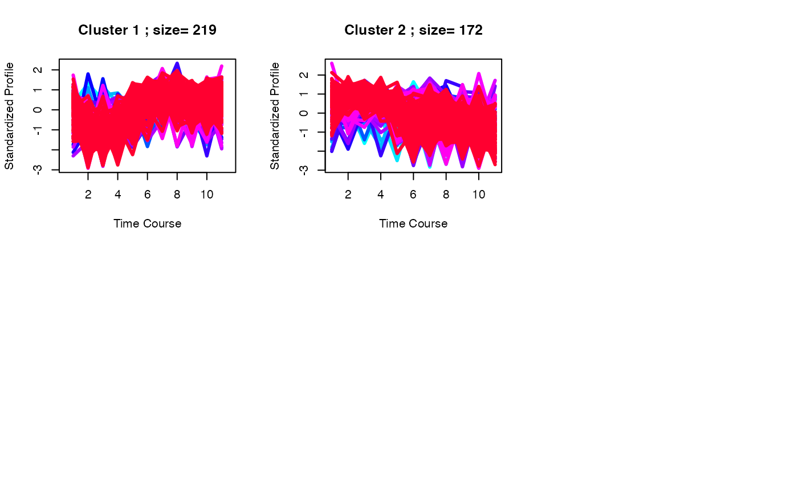
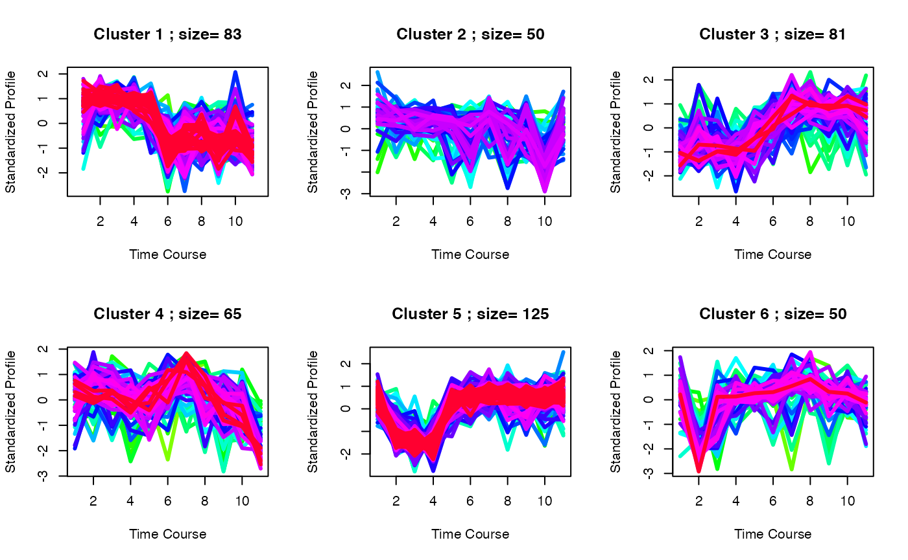

Site- and gene-centric analysis
8 December 2020
site_gene_analysis.RmdIntroduction
While 1, 2, and 3D pathway analyses are useful for data generated from experiments with different treatment/conditions, analysis designed for time-course data may be better suited to analysis experiments that profile multiple time points.
Here, we will apply ClueR which is an R package specifically designed for time-course proteomic and phosphoproteomic data analysis Yang et al. 2015.
Loading packages and data
We will load the PhosR package with few other packages we will use for this tutorial.
suppressPackageStartupMessages({
library(parallel)
library(ggplot2)
library(ClueR)
library(reactome.db)
library(org.Mm.eg.db)
library(annotate)
library(PhosR)
})We will load a dataset integrated from two time-course datasets of early and intermediate insulin signalling in mouse liver upon insulin stimulation to demonstrate the time-course phosphoproteomic data analyses.
data("phospho_liverInsTC_RUV_pe")
ppe <- phospho.liver.Ins.TC.ratio.RUV.pe
ppe
#> class: PhosphoExperiment
#> dim: 800 90
#> metadata(0):
#> assays(1): Quantification
#> rownames(800): LARP7;256; SRSF10;131; ... SIK3;493; GSK3A;21;
#> rowData names(0):
#> colnames(90): Intensity.Liver_Ins_0s_Bio7 Intensity.Liver_Ins_0s_Bio8
#> ... Intensity.Liver_Ins_10m_Bio5 Intensity.Liver_Ins_10m_Bio6
#> colData names(0):Gene-centric analyses of the liver phosphoproteome data
Let us start with gene-centric analysis. Such analysis can be directly applied to proteomics data. It can also be applied to phosphoproteomic data by using the phosCollapse function to summarise phosphosite information to proteins.
# take grouping information
grps <- sapply(strsplit(colnames(ppe), "_"),
function(x)x[3])
# select differentially phosphorylated sites
sites.p <- matANOVA(ppe@assays@data$Quantification,
grps)
ppm <- meanAbundance(ppe@assays@data$Quantification, grps)
sel <- which((sites.p < 0.05) & (rowSums(abs(ppm) > 1) != 0))
ppm_filtered <- ppm[sel,]
# summarise phosphosites information into gene level
ppm_gene <- phosCollapse(ppm_filtered,
gsub(";.+", "", rownames(ppm_filtered)),
stat = apply(abs(ppm_filtered), 1, max), by = "max")
# perform ClueR to identify optimal number of clusters
pathways = as.list(reactomePATHID2EXTID)
pathways = pathways[which(grepl("R-MMU", names(pathways), ignore.case = TRUE))]
pathways = lapply(pathways, function(path) {
gene_name = unname(getSYMBOL(path, data = "org.Mm.eg"))
toupper(unique(gene_name))
})
RNGkind("L'Ecuyer-CMRG")
set.seed(123)
c1 <- runClue(ppm_gene, annotation=pathways,
kRange = seq(2,10), rep = 5, effectiveSize = c(5, 100),
pvalueCutoff = 0.05, alpha = 0.5)
# Visualise the evaluation results
data <- data.frame(Success=as.numeric(c1$evlMat), Freq=rep(seq(2,10), each=5))
myplot <- ggplot(data, aes(x=Freq, y=Success)) +
geom_boxplot(aes(x = factor(Freq), fill="gray")) +
stat_smooth(method="loess", colour="red", size=3, span = 0.5) +
xlab("# of cluster") +
ylab("Enrichment score") +
theme_classic()
myplot
set.seed(123)
best <- clustOptimal(c1, rep=5, mfrow=c(2, 3), visualize = TRUE)
Site-centric analyses of the liver phosphoproteome data
Phosphosite-centric analyses will perform using kinase-substrate annotation information from PhosphoSitePlus.
RNGkind("L'Ecuyer-CMRG")
set.seed(1)
PhosphoSite.mouse2 = mapply(function(kinase) {
gsub("(.*)(;[A-Z])([0-9]+;)", "\\1;\\3", kinase)
}, PhosphoSite.mouse)
# perform ClueR to identify optimal number of clusters
c3 <- runClue(ppm_filtered, annotation=PhosphoSite.mouse2, kRange = 2:10, rep = 5, effectiveSize = c(5, 100), pvalueCutoff = 0.05, alpha = 0.5)
# Visualise the evaluation results
data <- data.frame(Success=as.numeric(c3$evlMat), Freq=rep(2:10, each=5))
myplot <- ggplot(data, aes(x=Freq, y=Success)) + geom_boxplot(aes(x = factor(Freq), fill="gray"))+
stat_smooth(method="loess", colour="red", size=3, span = 0.5) + xlab("# of cluster")+ ylab("Enrichment score")+theme_classic()
myplot
set.seed(1)
best <- clustOptimal(c3, rep=10, mfrow=c(2, 3), visualize = TRUE)
# Finding enriched pathways from each cluster
best$enrichList
#> $`cluster 1`
#> kinase pvalue size
#> [1,] "PRKACA" "0.000184676866298047" "5"
#> substrates
#> [1,] "NR1H3;196;|MARCKS;163;|PRKACA;339;|ITPR1;1755;|SIK3;493;"
#>
#> $`cluster 3`
#> kinase pvalue size
#> [1,] "Humphrey.Akt" "0.000162969329853963" "5"
#> [2,] "Yang.Akt" "0.000165386907010959" "6"
#> substrates
#> [1,] "TSC2;939;|PFKFB2;486;|FOXO3;252;|FOXO1;316;|GSK3A;21;"
#> [2,] "AKT1S1;247;|TSC2;939;|PFKFB2;486;|FOXO3;252;|FOXO1;316;|GSK3A;21;"SessionInfo
sessionInfo()
#> R version 4.0.3 (2020-10-10)
#> Platform: x86_64-apple-darwin17.0 (64-bit)
#> Running under: macOS Catalina 10.15.7
#>
#> Matrix products: default
#> BLAS: /Library/Frameworks/R.framework/Versions/4.0/Resources/lib/libRblas.dylib
#> LAPACK: /Library/Frameworks/R.framework/Versions/4.0/Resources/lib/libRlapack.dylib
#>
#> Random number generation:
#> RNG: L'Ecuyer-CMRG
#> Normal: Inversion
#> Sample: Rejection
#>
#> locale:
#> [1] en_US.UTF-8/en_US.UTF-8/en_US.UTF-8/C/en_US.UTF-8/en_US.UTF-8
#>
#> attached base packages:
#> [1] stats4 parallel stats graphics grDevices utils datasets
#> [8] methods base
#>
#> other attached packages:
#> [1] PhosR_1.1.2 annotate_1.68.0 XML_3.99-0.5
#> [4] org.Mm.eg.db_3.12.0 reactome.db_1.74.0 AnnotationDbi_1.52.0
#> [7] IRanges_2.24.0 S4Vectors_0.28.0 Biobase_2.50.0
#> [10] BiocGenerics_0.36.0 ClueR_1.4 e1071_1.7-4
#> [13] ggplot2_3.3.2
#>
#> loaded via a namespace (and not attached):
#> [1] colorspace_2.0-0 ggsignif_0.6.0
#> [3] ellipsis_0.3.1 class_7.3-17
#> [5] rio_0.5.16 rprojroot_2.0.2
#> [7] circlize_0.4.11 XVector_0.30.0
#> [9] GenomicRanges_1.42.0 GlobalOptions_0.1.2
#> [11] ggdendro_0.1.22 fs_1.5.0
#> [13] farver_2.0.3 ggpubr_0.4.0
#> [15] bit64_4.0.5 splines_4.0.3
#> [17] knitr_1.30 broom_0.7.2
#> [19] pheatmap_1.0.12 BiocManager_1.30.10
#> [21] compiler_4.0.3 httr_1.4.2
#> [23] backports_1.2.0 assertthat_0.2.1
#> [25] Matrix_1.2-18 limma_3.46.0
#> [27] htmltools_0.5.0 tools_4.0.3
#> [29] igraph_1.2.6 gtable_0.3.0
#> [31] glue_1.4.2 GenomeInfoDbData_1.2.4
#> [33] reshape2_1.4.4 dplyr_1.0.2
#> [35] Rcpp_1.0.5 carData_3.0-4
#> [37] cellranger_1.1.0 pkgdown_1.6.1
#> [39] vctrs_0.3.5 nlme_3.1-149
#> [41] preprocessCore_1.52.0 xfun_0.19
#> [43] stringr_1.4.0 network_1.16.1
#> [45] openxlsx_4.2.3 lifecycle_0.2.0
#> [47] rstatix_0.6.0 dendextend_1.14.0
#> [49] zlibbioc_1.36.0 MASS_7.3-53
#> [51] scales_1.1.1 BiocStyle_2.18.1
#> [53] ragg_0.4.0 pcaMethods_1.82.0
#> [55] hms_0.5.3 MatrixGenerics_1.2.0
#> [57] SummarizedExperiment_1.20.0 RColorBrewer_1.1-2
#> [59] yaml_2.2.1 curl_4.3
#> [61] memoise_1.1.0 gridExtra_2.3
#> [63] reshape_0.8.8 stringi_1.5.3
#> [65] RSQLite_2.2.1 desc_1.2.0
#> [67] zip_2.1.1 shape_1.4.5
#> [69] GenomeInfoDb_1.26.1 rlang_0.4.9
#> [71] pkgconfig_2.0.3 systemfonts_0.3.2
#> [73] matrixStats_0.57.0 bitops_1.0-6
#> [75] evaluate_0.14 lattice_0.20-41
#> [77] ruv_0.9.7.1 purrr_0.3.4
#> [79] labeling_0.4.2 bit_4.0.4
#> [81] tidyselect_1.1.0 GGally_2.0.0
#> [83] plyr_1.8.6 magrittr_2.0.1
#> [85] R6_2.5.0 generics_0.1.0
#> [87] DelayedArray_0.16.0 DBI_1.1.0
#> [89] mgcv_1.8-33 pillar_1.4.7
#> [91] haven_2.3.1 foreign_0.8-80
#> [93] withr_2.3.0 abind_1.4-5
#> [95] RCurl_1.98-1.2 tibble_3.0.4
#> [97] crayon_1.3.4 car_3.0-10
#> [99] rmarkdown_2.5 viridis_0.5.1
#> [101] grid_4.0.3 readxl_1.3.1
#> [103] data.table_1.13.2 blob_1.2.1
#> [105] forcats_0.5.0 digest_0.6.27
#> [107] xtable_1.8-4 tidyr_1.1.2
#> [109] textshaping_0.2.1 munsell_0.5.0
#> [111] viridisLite_0.3.0